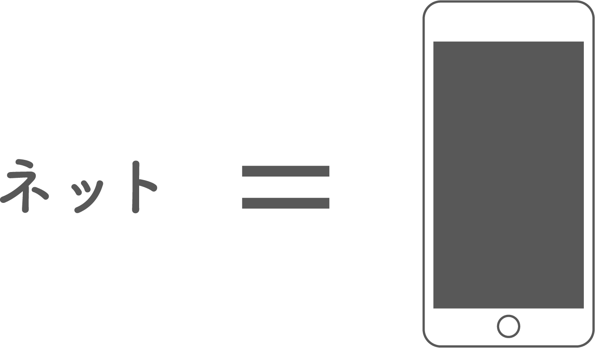
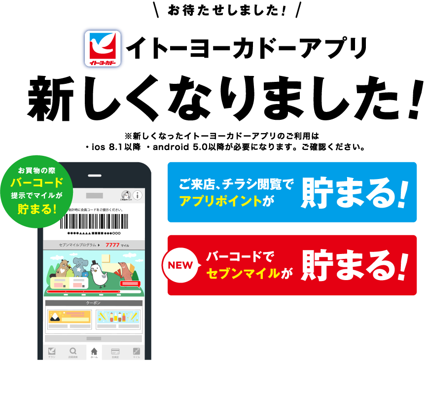

1
10日間を通して
10日間、決まった時間だけオフラインで過ごしたが半分はバイトで、もう半分は家で過ごすという結果になった。通信制限にかかるととてもイライラする。家の中でオフラインで過ごした時間はそれに近かった。最近はスマホのギガ数を増やせるプランなどがよく宣伝されているが、そうではなくネットを使わなくても利用できるコンテンツがもっと増えたらいいのになと思った。
※通信制限がかかるとドコモでもauでもソフトバンクでも最大で128kbpsまでしか速度が出なくなる。これは10年以上前の携帯電話の時代の通信速度で、メールや文字だけのサイトしかスムーズに読み込んでくれなくなる。
ベーシックパック
使った分だけお支払い。データ量によって月額定額料が変わる
ウルトラデータパック
ウルトラデータLパック 20GB 6,000円ウルトラデータLLパック30GB 8,000円翌月繰越可能
スーパーデジラ
データ通信をたくさん使う人向けの大容量データ定額サービス。データ容量は「データ定額20」(月額6,000円)「データ定額30」(月額8,000円)の2種類から選べる
ウルトラギガモンスター
<月額7,000円で50GBまで利用できるデータ定額サービス
みんな家族割
みんな家族割はウルトラギガモンスターの月額料金を、加入した家族の人数に応じて割引するサービス。
http://mobile-wifiii.com/599.html
3日目のお昼頃に母が病院に搬送されたという連絡が父からLINEで伝えられて、驚いた。学校にいたのでとても心配になったがLINEのおかげで病院にいる父と電話をしなくてもスムーズに連絡を取り合えたのでネットがあって良かったと思った。しかし、文面だけだと伝わってこない部分もあるなと思った。母の診断結果や状態を、一人暮らしをしながら働いてる姉に伝えられるのはとても助かるなと思った。また、病院から帰った母とすぐに連絡をとれるのも便利だなと感じた。連絡手段として使ったときの便利さは電話やメールの比ではないと思った。ネットが繋げられる時間まで待つ、という行為に自分はネット依存してしまっていたんだなと思った。
2
思ったこと、気づいたこと
ネットがないと使えないスマホではなく、ネットがなくても使えるスマホというあり方になっていくといいなと思った。古い情報から新しい情報まで膨大なデータを保存しておいてくれるネットに頼りすぎて形として保存したり書いて記録したりすることを忘れてしまっていると思った。いつも使っているPinterestもネットなしでは保存しておいたピンをひとつも見ることが出来なかった。ネットがなくてもすぐに見られるような形でアイデアや参考資料は保存しておくべきだと思った。
https://www.pinterest.jp/
ネットの普及によってオフラインでも出来ることをネットでするようになった。友達や家族とのコミュニケーション、買い物、ゲーム、読書、ネットがあればいつでもスマホひとつで簡単に出来る環境になった。オフラインとオンラインの境目がわからなくなってきている。
3

「ネットを使う」という言葉を聞いて現代のほとんどの人がスマホを思い浮かべるだろう。「オフラインで決まった時間を過ごす」と聞いてスマホが何時間も使えなくなるのと変わらないなと思ってしまった。ネットが使えなくても使える機能はいろいろあるがネットが使えないスマホでオフラインの時間を過ごす気にはならなかった。スマホを使わないで時間を過ごすことを考えた。私たちがスマホに求めていたものはネットがなければ成立しないものばかりだと思った。
4

2006年から2010年のスマートフォン・タブレット端末の登場により、いつでもどこでもインターネット接続が可能に。各SNSも活況をみせ、動画生中継サービスも登場
http://www.daj.jp/20th/history/
なぜネットがないと不自由に感じてしまうのか、それはネットが使えることが当たり前になっていたからで、当たり前にできていたことが出来なくなるのはとてもストレスに感じることだ。また私たちの年代は周りの人が当たり前にネットを使っている。その環境の中で生きるにはネットとというものが必要不可欠になってきている。
5
お年寄りの方でスマホを持っている人は増えてきているが使いこなせている人は少ない。私はイトーヨーカドーのサービスカウンターでアルバイトをしているのだが、新しく始まったイトーヨーカドーのアプリについてお年寄りの方からの問い合わせが絶えない。スマホを持ってはいるのだが「こういうのよくわからないのよね。」と口をそろえて言う。「こういうの」とはいわゆる「ネット」のことである。またはスマホというものに慣れていないという人もいる。「こういうの」とあやふやに指してしまうところに「わからない」という心情がより表れているなと思う。

http://www.itoyokado.co.jp/spe/chirashi_application/
私の74歳のおばあちゃんはまだガラケーを使っていてメールが返信できず私の母に教えてもらったりすることがある。携帯というものにまだ慣れていない。パソコンを見ることもないので常にオフラインの状態で過ごしているということになる。私はたまにネットが使えなくて不便じゃないのかな、と思うことがある。おばあちゃんの年代はネットが当たり前の環境ではなかった。そしてネットが普及しても馴染みがなく、特に必要性も感じず使わない人が多いのだと思った。
6
初めて行く場所で道を知らなくてもネットが使えればGoogleMapsの経路案内を使って目的地にたどり着くことが出来る。ネットが繋がっていない状態でGoogleMapsを開いてみると自分の今いる位置と地図の中で自分が向いている方向は表示してくれる。目的地までの経路は表示してくれないが、地図の中で自分が今どこにいて、どこを向いているのか分かるのはとても助かるなと思った。地図を見れなくても目的地に向かうことができる。
経路案内機能は使えないが現在地と自分の向いてる方向は表示される。
場所については表示される情報が限られている。
オンラインにすれば写真や電話番号、ウェブサイト、口コミや評価を見ることができる。
7
Google翻訳をオフラインで開いてみると音声、手書き入力は出来ないが、日本語から英語へ、英語から日本語へ、入力した言葉を素早く変換してくれた。原文の言語や訳文の言語の設定も変えられた。オフラインでもほとんど通常通り使えることに感動した。いつも使っているYahooの乗り換え案内のアプリは、乗り換え検索は出来ないがルートメモとして保存しておいた乗り換え案内については見ることができた。ネットがないと使えないアプリがほとんどだが、オフラインでも使えるアプリ内の機能もあることを知った。
オフラインになると音声、手書き入力は出来ないが、日本語から英語へ、英語から日本語へ、入力した言葉を変換してくれる。原文の言語や訳文の言語の設定も変えられ、オフラインでもほとんど通常通り使うことができる。
8
現代人の時間意識
ネットの普及によって現代人の時間意識は変化してきている。「時間を過ごす」とは動くことなのか、なにかを見たり聞いたりすることなのか、何もしないことは時間を過ごしていないのか。電車で通学をしている時間、何もしていないととても無駄に感じる。私たちは何もしていない時ほど「時間」を感じる。「時間」を感じるということは人にとって退屈だったり、ストレスだったりする。人は何かをすることで「時間」を意識しなくなる。ネットはこちらが特に何か考えなくても指一つで簡単にたくさんの情報量と多様なコンテンツを与えてくれる。ネットという空間は私たちから時間の意識を奪っていく。
9
様々なものが高度な技術により進化していくことで現代人は速さを追求できるようになった。それによってより時間を有効に使わなければならないという意識が増してしまっているのではないか、と思った。スマホではゲーム、検索、音楽、動画、写真、スケジュール管理など様々なことを複数同時に進行させながら、やることを簡単に切り替えることができるというマルチタスクなところが特徴である。私たちは朝ごはんを食べる時間がなかったりゆっくり湯船につかる時間がないほど、常に時間に追われている。そんな生活をしていく中でマルチタスクができるスマホに私たちは依存してしまうのだ。歩きながら、ご飯を食べながら、友達としゃべりながら、お風呂に入りながら、寝る前でもネットを使って過ごしてしまうのである。
アプリのアイコンをタップすれば簡単にウィンドウに表示される情報や、やることを切り替えられる。途中で違うことをやり始めても簡単に前にやっていたことに切り替えることができる。
10
ネットの何が便利なのか。もちろん調べたいことに対してすぐに答えを出してくれるのも便利だし、最新の情報を得られるのも便利だ。LINEやTwitterなどの SNSで世界中の人と簡単にコミュニケーションをとれるということも非常に便利である。 挙げだしたらきりがないだろう。最近はなんでもかんでも速いのが良いと思われる風潮にある。例えばAmazonでは注文した当日に届ける当日お急ぎ便というサービスがあり、そもそもネット通販が普及したのもお店に行かなくてもいろんなブランドの服を見て買うことができ、時間がかからないからである。Amazonや楽天、 LINEやTwitter、ネットありきのコンテンツが増え、たくさんの人が利用することでネットへの依存度は増していく。無駄な時間や体力を使わなくて済むことを人は便利と感じるのだと思った。
amazonお急ぎ便とは日本全国のお届け先（一部地域を除く）に、いち早く商品をお届けする配送オプション。お届け先、注文時間帯、商品によって、「当日お急ぎ便」が表示される場合と「お急ぎ便」が表示される場合があり、どちらのお急ぎ便を利用するかは選択できない。お急ぎ便の場合は注文確定日から3日以内、当日お急ぎ便の場合は注文確定当日に届く
https://www.amazon.co.jp